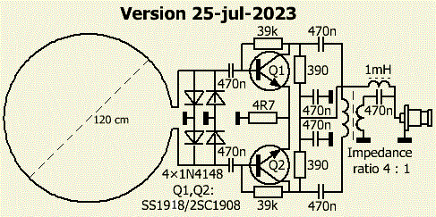
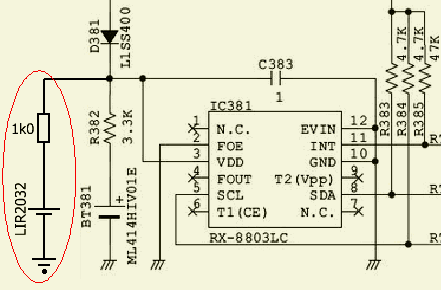
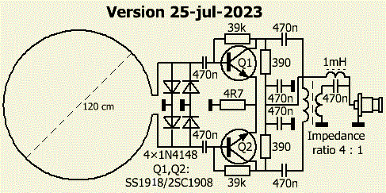

Extra rechargeable clock battery for IC-7300/7100 Click on image

Active loop receiving antenna.
Click on image
|  Extra rechargeable clock battery for IC-7300/7100 Click on image |
 |
| |
|
| PA0FRI's HOME BREW AMATEUR RADIO | ||||||||||
|
|
|
|||||||||
|
CQ serenade (MP3) |
Biography Eng |
|||||||||
|
Homepage since 8 nov 2003 |
||||||||||
| The content of articles assumes that you has the necessary technical knowledge of a licensed radio amateur. Have something repaired, modified or aligned? Contact PAØLMD www.hamradioservice.nl |
||||||||||